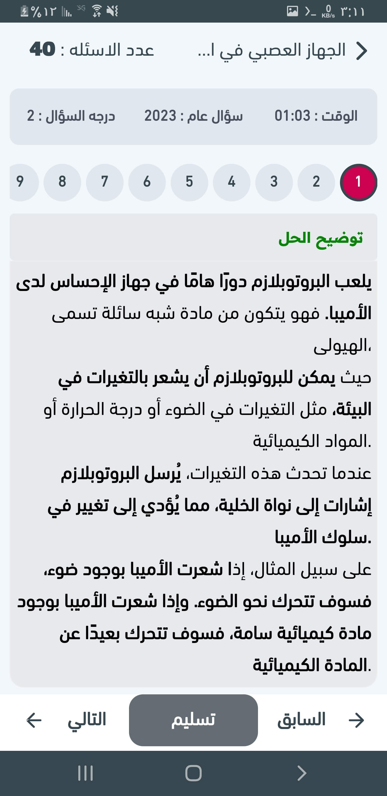
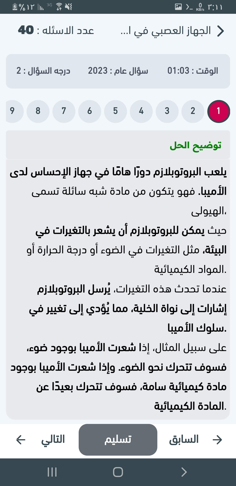

الأسئلة الشائعة
ما هو تطبيق الطوفان؟
هو تطبيق تعليمي شامل مجاني لطلاب الثالث الثانوي في اليمن، يحتوي على مراجعات، نماذج وزارية، كتب، وأدوات تفاعلية.
هل التطبيق مجاني بالكامل؟
نعم، التطبيق مجاني بالكامل ولا يحتاج لأي اشتراك أو دفع.
هل يدعم التطبيق المنهج اليمني الرسمي للثالث الثانوي؟
نعم، التطبيق محدث باستمرار ليتوافق مع المنهج الرسمي المعتمد من وزارة التربية والتعليم اليمنية.
هل يمكن تحميل الملازم والملخصات؟
نعم، يمكنك تحميل الملازم والملخصات بصيغة PDF مباشرة من داخل التطبيق.
هل يوجد نماذج اختبارات وزارية سابقة؟
نعم، يحتوي التطبيق على مجموعة كبيرة من نماذج الامتحانات الوزارية للسنوات السابقة مع حلول مفصلة.
هل يدعم التطبيق المواد العلمية والأدبية؟
نعم، التطبيق يدعم جميع المواد سواء كانت علمية أو أدبية بشكل كامل.
هل يمكن مشاهدة الفيديوهات التعليمية داخل التطبيق؟
نعم، يتوفر قسم خاص لدروس الفيديو التعليمية التفاعلية لجميع المواد.
هل يحتاج التطبيق إلى اتصال بالإنترنت دائماً؟
يمكنك استخدام بعض المحتويات بدون إنترنت بعد تحميلها، لكن الدروس والفيديوهات تتطلب اتصالًا.
هل التطبيق مناسب لجميع طلاب الثالث الثانوي في اليمن؟
نعم، التطبيق مخصص لمنهج ثالث ثانوي اليمن سواء العلمي أو الأدبي.
كيف يمكنني الحصول على أرقام الجلوس ونتائج الامتحانات؟
التطبيق يحتوي على قسم خاص لأرقام الجلوس والنتائج مباشرة بعد صدورها من وزارة التربية والتعليم.
هل يمكن التواصل مع زملائي داخل التطبيق؟
نعم، يحتوي التطبيق على نظام تواصل وواتساب مدمج لتبادل المعلومات والأسئلة.
هل يمكنني تحميل نماذج وزارية بصيغة PDF؟
نعم، جميع النماذج الوزارية متاحة للتحميل بصيغة PDF مع حلولها.
هل يوفر التطبيق ملخصات مركزة وسهلة الفهم؟
نعم، يحتوي التطبيق على ملخصات مركزة لكل مادة لتسهيل المراجعة قبل الامتحانات.
هل التطبيق يدعم التعليم التفاعلي؟
نعم، يحتوي التطبيق على اختبارات تفاعلية وتقييمات بعد كل درس لتحسين فهم الطالب.
هل توجد تحديثات دورية للمحتوى؟
نعم، يتم تحديث المحتوى باستمرار ليشمل كل جديد في المنهج والتعديلات الوزارية.
هل يمكنني استخدام التطبيق بدون إعلانات؟
نعم، التطبيق خالي من الإعلانات المزعجة ويوفر تجربة تعليمية مريحة.


 
